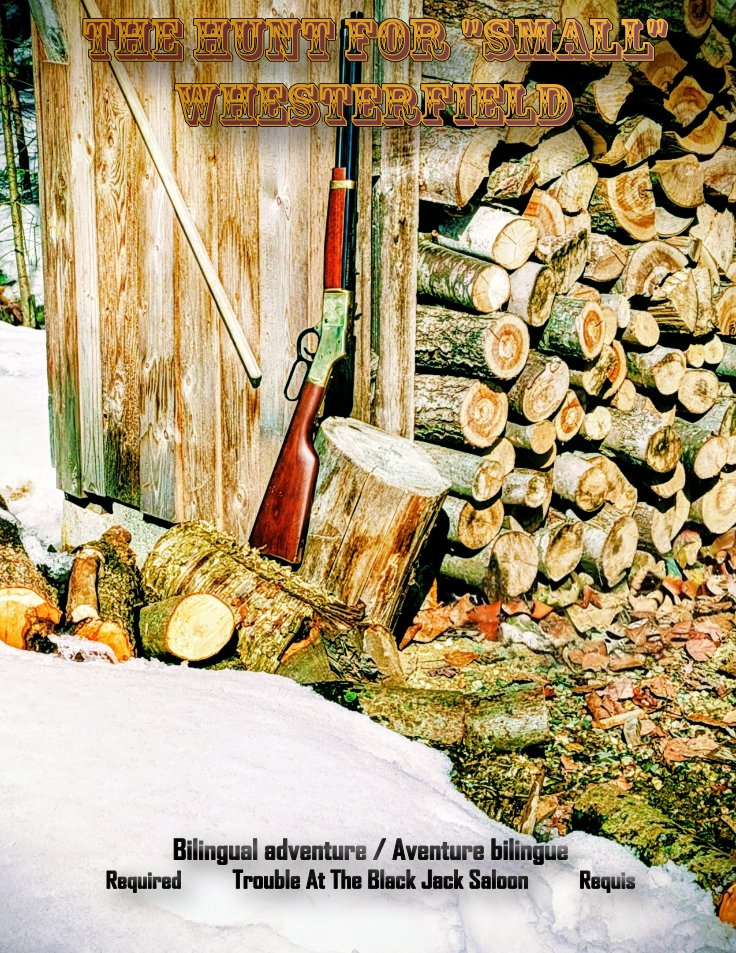

Choose Your Protocol
| Feature | TCCC System (Full) | TCCC Lite |
|---|---|---|
| Primary Focus | Tactical Realism & Longevity | Cinematic Speed & One-Shots |
| Core Mechanic | Scalable Dice (d4-d12) | Blackjack-Style Resolution |
| Lethality | Very High (Injury Tracking) | High (Narrative Brutality) |
| Preparation | Moderate (Toolkit Design) | Zero-Prep / Pick-up-and-play |
I. THE CORE ENGINE: TCCC SYSTEM
Inside the Saeculum Line | Universal Tactical Toolkit
SAECULUM: BLOOD OF AGES
A genre-agnostic toolkit across all ages of human evolution. Whether you are running primitive survival, a desert raid, or space opera, the mechanics adapt while keeping math consistent.

SAECULUM: CARNEFERREUS
The expansion for the Saeculum universe. High-consequence survival in a fractured post-apocalyptic / cyberpunk North America.

II. THE TCCC LITE ENGINE: BLACKJACK
Cinematic Precision | Fast-Filler | Zero-Prep
TCCC LITE SYSTEM
An oversimplified, fast-paced adaptation of the TCCC System. Designed for rapid resolution and high-stakes cinematic action.
Trouble at the Black Jack Saloon
Experience the grit of the Old West. This all in one game uses unique blackjack-style resolution.
Visit DriveThruRPG Store
THE HUNT FOR "SMALL" WHESTERFIELD
The first major expansion for Trouble at the Black Jack Saloon. Bilingual (EN/FR) mini-campaign.
Acquire Expansion
III. NARRATIVE ASSETS
Emergent Stories | Official Session Harrows
SAECULUM: CHRONICLE OF BLOOD
A visceral novelization of the TCCC System in action. Features outcomes generated during official sessions.
COVER ART PENDING
[REDACTED]
FIELD REPORT
If you have any questions, comments or if you are interested in playtesting either the TCCC Lite or the Full TCCC engine, please fill out the field report below. I am available for online play, as well as in-person sessions if you are near the Drummondville area.